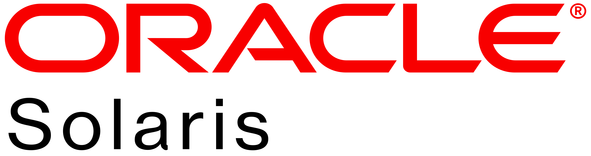
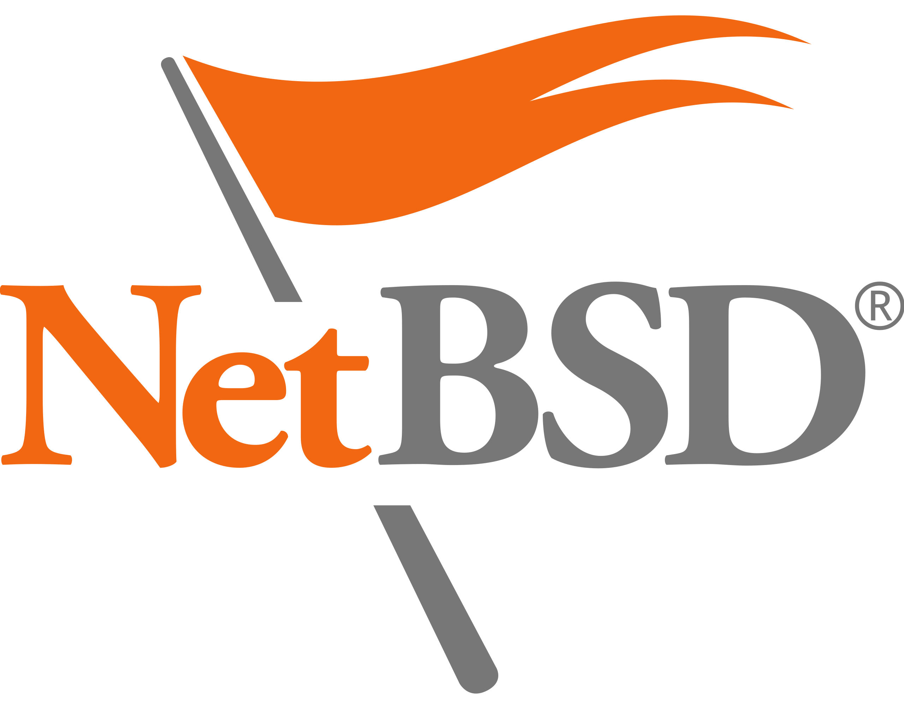
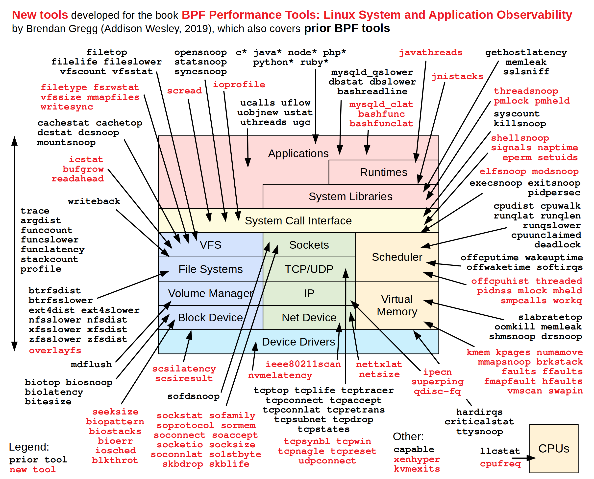

class: center, middle # Debugging in Production ??? * Many different ways to debug in production * Logging * Datadog * Kubeconsole - monkey patching * Holy grail: insert breakpoints and inspect using interactive debugger * I'm going to talk about dynamic tracing --- class: center, middle # Dynamic Tracing --- # Static Tracing * When to enable tracing * Fixed points of tracing * Fixed what info to collect ??? * Always enabled - Datadog * Trace points are decided at build time * strace - static tracing --- # Dynamic Tracing * When to enable tracing * What to trace * What information to collect ??? * Inspect what happens inside a system * Decide what trace * Decide when trace * No fixed trace points --- # DTrace * A tool for dynamic tracing * Developed at Sun in 2003 * Designed for use in production * Trace whole stack: userland, kernel, network * No overhead when inactive * Proportional overhead when active <br> <br> <br> <style> #apple_logo::after { padding-left: 3px; content: "*"; } #linux_logo::after { padding-left: 5px; content: "***"; } #windows_logo::after { padding-left: 5px; content: "**"; } .asterisk { font-size: 15px; } </style> <ul style="list-style-type: none"> <li style="display: inline; margin: 25px"><p></p></li> <li style="display: inline; margin: 25px"></li> <li style="display: inline; margin: 25px"></li> <li style="display: inline; margin: 25px" class="asterisk" id="apple_logo"></li> </ul> <ul style="list-style-type: none; margin-left: 100px;"> <li style="display: inline; margin: 30px"><p></p></li> <li style="display: inline; margin: 30px" class="asterisk" id="windows_logo"></li> <li style="display: inline; margin: 30px" class="asterisk" id="linux_logo"><img src="linux.png" width="8%" height="8%" ></li> </ul> ??? * Always available * You can analyze any information with DTrace * Do no harm * macOS - No kernel related probes due to System Integrity Protection (SIP) * Windows - Not installed by default - might have changed in a later version * Linux - Only available on Oracle Linux. BPF as backend --- # Overhead * Dynamic insertion of probes * In kernel processing * Collect only what's necessary ??? * When probe is inactive - runs regular code * Modifies the running code to insert probes * When probe is active - traps into kernel * Minimize context switching between kernel and userland --- # Examples #### Hello World ``` $ dtrace -n 'BEGIN { trace("Hello World"); exit(0); }' dtrace: description 'BEGIN ' matched 1 probe CPU ID FUNCTION:NAME 5 1 :BEGIN Hello World ``` #### Count system calls: ``` $ dtrace -n 'syscall:::entry { @[probefunc] = count(); }' ``` #### Count Ruby method calls ``` $ dtrace -c 'ruby foo.rb' -n 'ruby$target:::method-entry { @[copyinstr(arg1)] = count(); }' dtrace: description 'ruby$target:::method-entry ' matched 1 probe first method second method dtrace: pid 83337 has exited bar 1 foo 1 ``` ??? * First one prints Hello World * Second counts system calls. Prints each system call and how many times it was called. Runs until it's canceled * Third count Ruby method calls. Runs until the Ruby process exists --- # DTrace DSL - D * DTrace specific DSL * Based on `awk` and C * Arithmetic expressions * Variables * Aggregates * Built-in functions * Macro Variables * Conditional expressions * Basic types * Associative arrays * Probe arguments ??? * Custom DSL called "D" - not to be confused with Digital Mars D --- ## Syntax ```dtrace probe /filter/ { actions; } // overal syntax ``` ```dtrace BEGIN { i = 0; i += 1; } // variables and arithmetic expressions ``` ```c BEGIN { foo = 3; } // global variable BEGIN { self->foo = 3; } // thread local variable BEGIN { this->bar = "bax"; } // clause local variable ``` ```dtrace BEGIN { @foo["bar"] = count(); } // aggregate ``` ```dtrace BEGIN { printf("foo %d\n", 3); } // built-in functions ``` ```dtrace ruby$target:::method-entry {} // macro variable ``` ```dtrace BEGIN { i = 1 == 2 ? "foo" : "bar"; } // conditional expression ``` ```dtrace BEGIN { aa["hello"] = 456; } // associative array ``` ```dtrace BEGIN { trace(arg0); } // probe argument ``` ??? * Quick look at the D syntax * Probe is a point of instrumentation --- # Probes #### List probes ``` $ dtrace -l | wc -l 31976 ``` ``` $ dtrace -l ID PROVIDER MODULE FUNCTION NAME 1 dtrace BEGIN 2 dtrace END 3 dtrace ERROR 31 profile profile-97 32 profile profile-199 33 profile profile-499 66 cache11224 libcache.dylib cache_get_and_retain GetBegin 68 cache11224 libcache.dylib cache_get_and_retain GetEnd ``` ??? * List all available probes * List probes in application, run that application --- # Probes * `dtrace` - Tracing the D program itself * `lockstat` - Locking behavior * `profile` - Time-based interrupt * `fbt` - Function Boundary Tracing - entry to and return from functions in the kernel * `syscall` - Entry to and return from every system call in the system * `sdt` - Statically Defined Tracing - Probes at sites that a software programmer has formally designated * `sysinfo` - Kernel statistics classified by the name `sys` * `vminfo` - vm kernel statistics * `proc` - Process creation and termination * `sched` - CPU scheduling * `io` - Disk input and output * `pid` - Entry and return of a function in a user process ??? * macOS missing a lot of kernel related probes. Locked down with SIP - System Integrity Protection --- # Probe syntax ``` provider:module:function:name ``` #### Example ``` $ dtrace -n 'syscall::open:entry { @[probefunc] = count(); }' $ dtrace -n 'syscall::read:return { @[probefunc] = count(); }' ``` ??? * `provider` - DTrace provider that is publishing this probe * `module` - Kernel module or user library * `function` - Program function where probe is located * `name` - Semantic meaning of probe --- # `pid` Provider ```c #include <stdio.h> void foo(int a) { printf("foo a=%d\n", a); } void bar(int b) { printf("bar b=%d\n", b); } int main() { foo(3); bar(4); } ``` #### Example ``` dtrace -c ./main -n 'pid$target:main:foo:entry { trace(arg0); }' dtrace: description 'pid$target:main:foo:entry ' matched 1 probe foo a=3 bar b=4 dtrace: pid 29691 has exited CPU ID FUNCTION:NAME 4 26039 foo:entry 3 ``` ??? * Entry and return of a function in a user process * Any instruction * Special, defines a class of provides. One for each running process --- # USDT - Userland Statically Defined Tracing * Static probes * Semantic meaning * Native functions ??? * Fixed points of tracing * Give semantic meaning * Example: Postgres - start of query, end of query * Example: web sever - start of request, end of request * Like providing a stable API --- # Ruby USDT * Ruby embeds USDT probes since 2.0 ``` $ dtrace -c ruby -l -P 'ruby$target' ID PROVIDER MODULE FUNCTION NAME 25911 ruby46438 libruby.3.3.dylib vm_exec_core array-create 25912 ruby46438 libruby.3.3.dylib rb_ary_repeated_combination array-create 25913 ruby46438 libruby.3.3.dylib rb_ary_repeated_permutation array-create ``` ??? * Example of some Ruby USDT probes * As we can see the `array-create` probe can be triggered from three different locations --- # Ruby USDT Probes * `array-create` * `cmethod-entry` <span style="color: red; margin-left: 40px">←</span> * `cmethod-return` <span style="color: red; margin-left: 30px">←</span> * `find-require-entry` * `find-require-return` * `gc-mark-begin` * `gc-mark-end` * `gc-sweep-begin` * `gc-sweep-end` * `hash-create` * `load-entry` * `load-return` * `method-entry` <span style="color: red; margin-left: 40px">←</span> * `method-return` <span style="color: red; margin-left: 30px">←</span> * `object-create` * `parse-begin` * `parse-end` * `raise` * `require-entry` * `require-return` * `string-create` * `symbol-create` ??? * All Ruby USDT probes * The ones that are interesting to me are highlighted --- # Ruby `*method-*` probes * `cmethod-entry` * `cmethod-return` * `method-entry` * `method-return` #### Arguments * `arg0` - name of the class (a string) * `arg1` - name of the method about to be executed (a string) * `arg2` - the file name where the method is _being called_ (a string) * `arg3` - the line number where the method is _being called_ (an int) ??? #### Unfortunately * `method-*` requires TracePoints to be activated * No method arguments * No return value --- # Example ```ruby TracePoint.new(:call){}.enable def foo = puts "first method" def bar = puts "second method" foo bar { puts "inside block" } foo ``` ``` $ dtrace -c 'ruby foo.rb' -n 'ruby$target:::method-entry { @[copyinstr(arg1)] = count(); }' dtrace: description 'ruby$target:::method-entry ' matched 1 probe first method second method dtrace: pid 99571 has exited bar 1 foo 2 ``` ??? * Example of using Ruby `method-entry` probe --- class: center, middle # Demo ??? * Show a demo of DTrace * Syscall provider (requires a VM) * Pid provider * Ruby USDT probe --- class: center, middle # BPF ??? * Now I'm going to talk a bit about BPF * Since DTrace is not natively available on Linux one can use BPF as an alternative --- # BPF * BPF -> eBPF -> BPF * General framework for running programs in the kernel * Compile high level languages to BPF byte code ??? * BPF is a bit more complicated than DTrace * General framework for running programs in the kernel * VM inside the kernel (VM like Java) * Can be used for many things. Implementing drivers, network security, observability * Started out as a efficient way to filter TCP packets (tcpdump) * GCC and LLVM backends --- # Tools * `bpftrace` <p></p> ??? * Separate tools for different tasks * Tools written in some language and compiled to BPF byte code * Or `bpftrace` scripts --- # `bpftrace` ??? * `bpftrace` is a pretty recent tool * Closest match to DTrace * Has a custom DSL just like DTrace * DTrace USDT probes are compatible with bpftrace --- class: center, middle # Containers ??? * Technology for isolating applications * Can be seen as a lightweight form of virtualization * Where's a virtual machine virtualizes hardware, container virtualizes the operating system * Different technologies available * Started as chroot * Jails in BSD * Zones in Solaris/illumos * Containers in Linux --- # Linux Containers * Namespace - isolation * Cgroups - resources * Overlay filesystem ??? * Complicated, kernel features working together * Namespace - isolation of: processes, network, user IDs, filesystem * Cgroup - resource limits: CPU, memory * Different implementations available, like Docker --- class: center, middle # Demo ??? * Use `kubectl debug` to get a container into an existing pod * Use bpftrace to inspect the system --- # Summary * `kubectl` - interact with Kubernetes cluster * `k9s` - TUI for interacting with Kubernetes cluster * `kubectl debug` - access production pod * [nixery.dev](https://nixery.dev) - ad-hoc container registry * DTrace/bpftrace - inspect system ??? * Use `kubectl debug` to get a container into an existing pod * Use bpftrace to inspect the system --- class: center, middle # Questions?